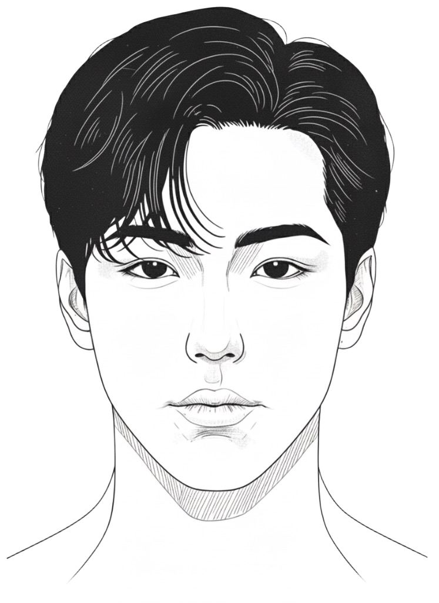
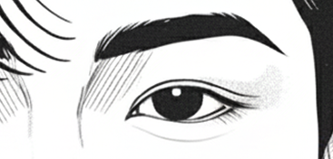

관상
초보편
귀
눈썹
눈
하관
입
#CAM 03

귀
귀는 성격적인 복과 지혜, 부모와 인연,
성장 운을 본다. 반대로 귀가 얇다면,
타고난 기반이 약하거나 덕이 부족함.

눈 / 눈썹
눈
마음의 창 — 정신 상태, 감정, 의지,정직함을 보여줌 (내면)
눈썹
감정 조절력, 인간관계, 협력·친구운 (외면)
입
언어, 사교성, 신뢰감, 재물운 대표.
하관
인생 말년, 안정감, 현실감, 책임감 대표.
관상;
곁에 두면 안되는 사람